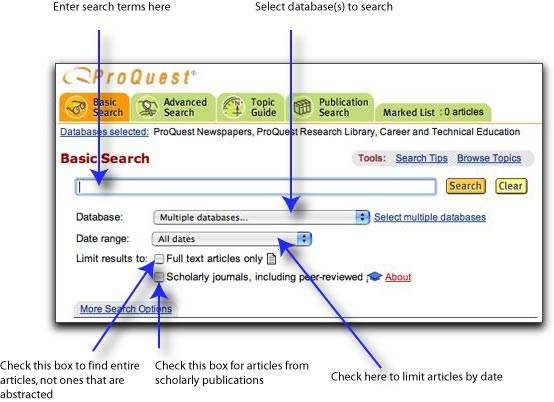
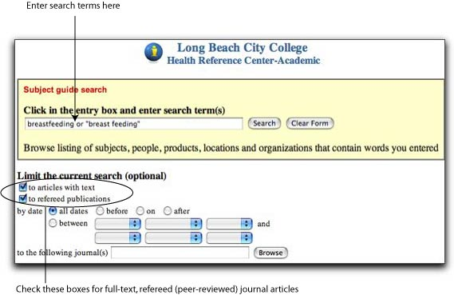

|
Human Development: Selected Resources |
| Contents: | ||||
| Find Reference Books | Find Books to Check Out | Find Articles | Find Web Sites | Cite Your Sources | ||||
| FIND REFERENCE BOOKS |
|
|
The following reference books, located in the LAC Reference Room, provide information about the emotional, intellectual, and physical growth patterns of human beings. |
|
| The Corsini Encyclopedia of Psychology and Behavioral Science | ref BF 31 .E52 2001 |
|
| Encyclopedia of Childbearing: Critical Perspectives | ref RG 525 .E52 1993 | |
| Encyclopedia of Family Life | ref HQ 534 .E53 1999 | |
| Encyclopedia of Human Behavior | ref BF 31 .E5 1994 | |
| Encyclopedia of Marriage and Family | ref HQ 9 .E52 2003 | |
| Encyclopedia of Mental Health | ref RA 790.5 .E53 1998 | |
| Gale Encyclopedia of Childhood and Adolescence | ref HQ 772 .G27 1998 | |
| Human Sexuality: an Encyclopedia | ref HQ 9 .H846 1994 | |
| Psychology and Mental Health | ref RC 437 .P795 2001 | |
| Ready Reference: Women's Issues | ref HQ 1115 .W6425 1997 | |
| FIND BOOKS TO CHECK OUT AND E-BOOKS |
| To find resources on human development, try entering a keyword or subject search in the Library’s online catalog, Voyager. Keyword search tips: Use quotes to search phrases. Use + to mark required terms. Use ? with partial words to find all possible variant endings. |
| "self-esteem" +teenagers | [Keyword Search] | |
| obesity +children | [Keyword Search] | |
| Pregnancy | [Subject Search] | |
| Middle aged persons | [Subject Search] | |
| Sex differences (Psychology) | [Subject Search] |
| Since LBCC Library has a partnership agreement with CSULB, you may check out books from the University Library. To identify books, search CSULB's online catalog, called Coast, which is accessible over the Web at http://coast.csulb.edu. |
| FIND JOURNAL ARTICLES |
| The Library subscribes to a number of online databases, which are accessible over the World Wide Web, from remote computers or those located in the Library. These databases index and abstract articles, and in many cases, provide the full text, enabling you to print a copy at a cost of $.10 per page or e-mail them to yourself for free. Most of the databases are password-protected. You can pick up a list of current passwords at the Reference Desk. For your assignment, ProQuest would be an excellent database to search, because it contains journal articles from the ProQuest Research Library and GenderWatch databases. You may limit your search to these two databases. To access ProQuest, go to the Library's homepage at http://lib.lbcc.edu, click on "Online Databases," click on the letter "P," and then click on "ProQuest." Shown below is the Basic Search screen. To limit your search to the ProQuest Research Library and GenderWatch databases, click on the link "Select multiple databases," then check the appropriate boxes. |
|
|  | |
For your assignment, Health Reference—Academic would also be an excellent database to search, because it contains journal articles from over 40 nursing journals, as well as articles from medical journals and consumer health publications. Illustrated below is a search for full-text, journal articles in this database: |
|
|  | |
| FIND WEB SITES | ||
| Use a subject directory, such as those listed below, to find annotated and reviewed listings of Web sites by subject. | ||
| Librarians' Index to the Internet (LII) |
http://www.lii.org | |
| Infomine |
http://infomine.ucr.edu |
|
| Use a search engine to do a keyword search. | ||
| http://www.google.com | ||
| Ask.com | http://ask.com | |
| Gigablast |
http://www.gigablast.com |
|
| When selecting additional Web sites for research, consult Five Criteria for Evaluating Web Pages to learn how to identify authoritative Web pages that are useful for research purposes. |
||
| CITE YOUR SOURCES |
||
| Remember to list the sources used in your research in a bibliography or works-cited page following a documentation style, such as MLA (Modern Language Association) or APA (American Psychological Association). The most up-to-date guides for citing Web pages and other electronic sources in footnotes and bibliographies are on the Web, and they are accessible from the Library's homepage at http://lib.lbcc.edu. Click on "Internet Resources," then click on "Citation Guides." |
||
| Contents: | ||||
| Find Reference Books | Find Books to Check Out | Find Articles | Find Web Sites | Cite Your Sources | ||||
E-mail questions and comments to mwhite@lbcc.edu
Monica White, Liberal Arts Campus Library
http://lib.lbcc.edu/monicawhite/orientations/human-dev.html
Last updated: May 29, 2006
| Back to Library homepage |